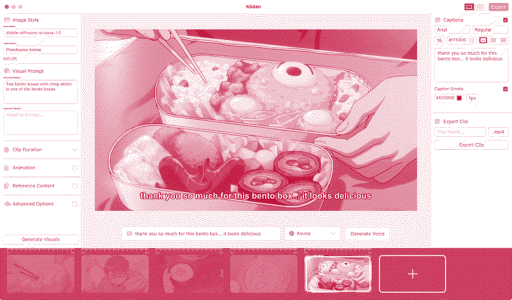

Home / Doubt-Deet-To-Tokyo-Kodan-Desktop
We sent out a big email to 1,000 of Dieter's fans from his clothing brand (5% of his email list). His fans were not interested, even though we had made a one-piece specific style for his fans. They responded by basically saying AI anime is gross. This was discouraging for us because we believed that this audience would be our path to monetization. We had set a paywall for generating the one-piece style content, but with or without the paywall, Deet's anime clothing brand fans were not interested.
This (among other project factors like the Instagram videos generated by Kōdan not doing well) led to Dieter considering to not continue with the project and instead leaving to build his own project. Amidst our debates as to whether or not to continue, I suggested Dieter take 5 days and leave to Tokyo & work on anything but Kōdan and that after those 5 days he would decide if he wants to continue on it. We decided to not talk for those 5 days. The intention behind this idea was that it would lead to resentment if he continued on the project without deciding to continue on his own terms. Whatever decision he made, I knew it would lead to a decisive future at least for the time to remain in Japan (& in my head it was for the foreseeable future).
While Dieter was gone, I got a desire to make something that would last. I knew that one day our server could go offline or our database could close-down. I wanted to make Kōdan something that users could use forever, regardless of if we maintained the project. That spawned the birth of Kōdan desktop, which I started to build while Dieter was away. Kōdan desktop gives the person making the story more creative control & responsibility over the story. It's harder to make a story with but it is more possible to make something awesome (because you control every frame & every voiceline). I love it! It's all open source. You can check it out here: Website & GitHub Repo. It's only for MacOS.

Above is the initial design concept that I made for Kōdan desktop
In retrospect, Dieter was probably right. I had attached my identity to this specific project & this specific solution. It was sort of all I had in my life in Japan, and I didn't want to let go of it. Regardless, he returned and decided that he wanted to continue working on Kōdan with me.
Kōdan Desktop Launch, Historical Analysis, and Conversation With Mentor →